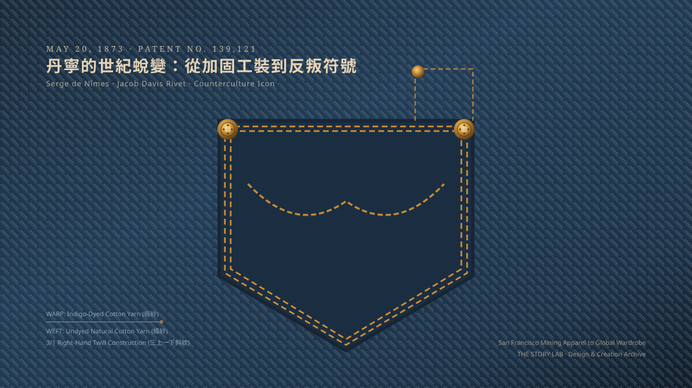
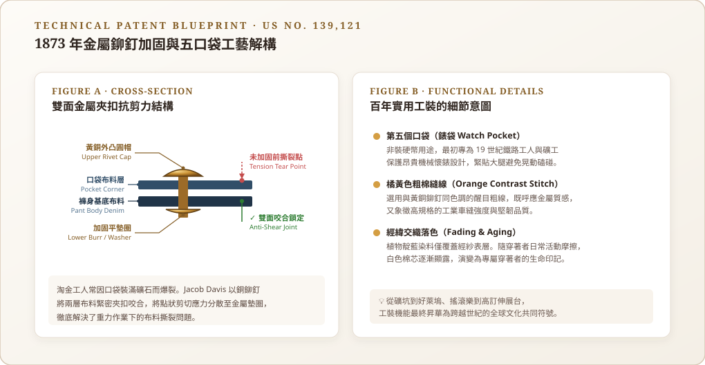

牛仔褲如何從淘金熱工裝，變成跨越世紀的時尚符號？
藍色傳奇的物質文化史：金屬鉚釘、斜紋布料與叛逆青年的跨階級蛻變

打開你的衣櫃，無論男女老幼、貧富貴賤，幾乎很難找到一個未曾擁有過牛仔褲的人。它可以出現在工地的泥濘鋼架上，也可以搭配西裝外套走進高階科技峰會；它被好萊塢叛逆巨星視為靈魂標籤，也曾被名流名模穿上巴黎與紐約的高級訂製伸展台。一件最初專為 19 世紀淘金礦工打造的耐磨防撕裂工作褲，究竟如何衝破階級、職業與性別的藩籬，成為人類服裝史上最具包容性與生命力的物質文化符號？
詞彙的跨洋漂流：Denim 與 Jeans 的前世今生
在深入談論這條褲子的傳奇前，我們有必要先廓清日常語言中常被混淆的兩個詞彙：Denim（丹寧）與Jeans（牛仔褲）。
「Denim」指的是一種紡織工藝。早在 17 世紀，法國南部紡織重鎮尼姆（Nîmes）的工匠便以羊毛與絲綢混合織造出一種堅固耐磨的斜紋呢料，在法語中被稱為 serge de Nîmes（尼姆斜紋布），傳入英國後被口語化簡稱為「Denim」。這種布料的獨特之處在於採用三上一下（3/1）的斜紋編織法：縱向的經紗（Warp）浸染深沉的天然木藍染料，而橫向的緯紗（Weft）則保留天然棉花的未染色原白。因此，丹寧布正面呈現飽滿的靛藍色，反面則是清淡的灰白色。
而「Jeans」一詞則指向褲款的發源地。義大利熱那亞（Genoa）的海軍水手與港口工人，自 16 世紀起便習慣穿著一種由耐磨粗棉製成的結實長褲。法國人將熱那亞人稱為 Gênois，他們的褲子則被記為 Gênes，輾轉流傳至英語世界後演變成了「Jeans」。
舊金山奇蹟：1873 年那枚拯救褲檔的銅鉚釘
19 世紀中葉，加州淘金熱（California Gold Rush）將成千上萬的冒險家、礦工與伐木工人吸納進美國西部荒野。然而，在陰暗潮濕的礦坑與尖銳岩石堆中，工人們面臨著一個極度尷尬的痛點：當時的普通棉布或帆布工裝褲壽命極短，尤其是口袋兩端與褲襠部位，常因承受沉重工具與礦石的剪切張力而劇烈撕裂。
在內華達州里諾（Reno）經營裁縫鋪的拉脫維亞猶太移民雅各布·戴維斯（Jacob Davis），經常收到礦工妻子抱怨丈夫褲子頻繁破損。某天，戴維斯靈機一動，從手邊製作馬具的工具箱中抓起幾顆黃銅鉚釘（Copper Rivets），直接將它們釘在口袋邊緣與下襠受力最脆弱的縫線交叉處。
這個看似樸拙的小改裝，展現了驚人的抗撕裂耐力。這款加固褲迅速在當地工人圈中引發搶購。為了防止點子被競爭對手剽竊，戴維斯決定申請專利；但他湊不出 68 美元的專利申請費，於是寫信給他在舊金山的布料供應商——德裔猶太商人李維·史特勞斯（Levi Strauss）。
1873 年 5 月 20 日，美國專利商標局正式授予兩人專利號第 139,121 號的「改進口袋開口緊固方法（Improvement in Fastening Pocket-Openings）」。隨後，帶有經典雙弧形縫線與銅鉚釘的 Levi's「XX 腰部工裝長褲」（即日後傳奇的 501 型號前身）正式投產，這一天也被服裝史學家公認為現代牛仔褲的誕生日。
【設計演進】不為裝飾的五個工裝零件
牛仔褲今天被視為時尚符號的每一個標誌性細節，當初誕生時都帶著純粹的工裝機能目的：

錶袋（Watch Pocket）：位於右側前口袋內部的小口袋，並不是為了現代人裝硬幣或打火機設計的。在 19 世紀，鐵路工程師與拓荒者依賴昂貴且易碎的機械懷錶確認時間，這個緊貼大腿上方的小袋能確保懷錶在劇烈勞動時不會晃動摔落。
黃銅排扣與橘黃色粗線：由於早期拉鍊尚未發明且在塵土環境中容易卡死，金屬鈕扣成為最可靠的門襟配置；而橘黃色的粗棉縫線最初是為了呼應黃銅鉚釘的金屬色澤，並在深藍布面上展現扎實嚴密的做工品質。
從荒野到銀幕：反叛符號與青年的第二層皮膚
在 1930 年代以前，牛仔褲依然只屬於重體力勞動階層。穿著牛仔褲進城，在當時被視為粗鄙且失禮的舉動。這道階級高牆的倒塌，始於好萊塢西部電影（Westerns）的黃金時代。約翰·韋恩（John Wayne）與賈利·古柏等銀幕牛仔在夕陽與荒漠中騎馬開槍的英姿，讓全美大眾開始將牛仔褲與「拓荒精神、男子氣概、獨立與自由」劃上等號。
然而，真正讓牛仔褲成為當代文化核彈的，是 1950 年代二戰後年輕一代的靈魂覺醒。
1955 年，詹姆斯·狄恩（James Dean）主演的電影《養子不教誰之過》（Rebel Without a Cause）上映。他在片中身穿紅色防風夾克、白色 T 恤與一條緊身經典藍色牛仔褲。面對戰後郊區中產階級虛偽拘謹的西裝革履與按部就班的成人規範，狄恩所代表的青年世代以牛仔褲作為無聲的抗議制服。牛仔褲不再代表貧困的礦工，而成為拒絕妥協、衝撞體制與追求自我的精神宣言。美國許多中學甚至一度下達禁令，嚴禁學生穿著牛仔褲進入校園，但這反而更加劇了它在青少年心目中的神聖叛逆感。
水洗與落色：一條褲子與一個人的生命共構
進入 1970 與 80 年代，牛仔褲迎來了第二次蛻變。嬉皮士在喇叭褲管上刺繡花朵、流蘇與反戰標語；卡爾文·克萊（Calvin Klein）與布魯克·雪德絲（Brooke Shields）的高調廣告，則將牛仔褲直接帶上了曼哈頓高級時尚的聖殿，證明工裝可以兼具性感、剪裁與奢侈品質。
更迷人的是丹寧布在物質哲學上的獨特性。傳統的原生原色丹寧（Raw / Dry Denim）未經人工預水洗，因為植物靛藍染料無法完全滲透棉紗內部，棉芯仍保持白色。隨著穿著者日復一日的蹲下、行走、騎車，在關節處形成的貓鬚（Whiskers）、蜂窩（Honeycombs）與磨損，會逐漸磨掉表層染料，將穿著者獨一無二的體態軌跡與歲月刻印在布料上。
沒有任何一件衣服能像牛仔褲一樣，在穿舊、磨破與褪色之後，反而比剛買來時更加動人、更有身價。它在工業流水線的批量生產中誕生，卻在穿著者真實的生命磨礪中，演變成專屬個人的訂製藝術品。
在時尚潮流以「季」為單位瘋狂輪轉、快速更迭的消費時代，牛仔褲展現了一種罕見的永恆性。它沒有繁複的裝飾哲學，它的每一道斜紋、每一顆鉚釘都源自實用與生存。
當我們今天隨意套上一條牛仔褲出門時，我們穿上的其實是一部活著的物質文明史：那是 1873 年內華達裁縫檯上的靈光一閃，是 1950 年代青年衝撞世界的傲骨，更是一種能夠跨越性別、階層與時代的平民美學。真正的經典從不需要昂貴的面料背書，最深邃的優雅往往源自最樸素的堅韌。